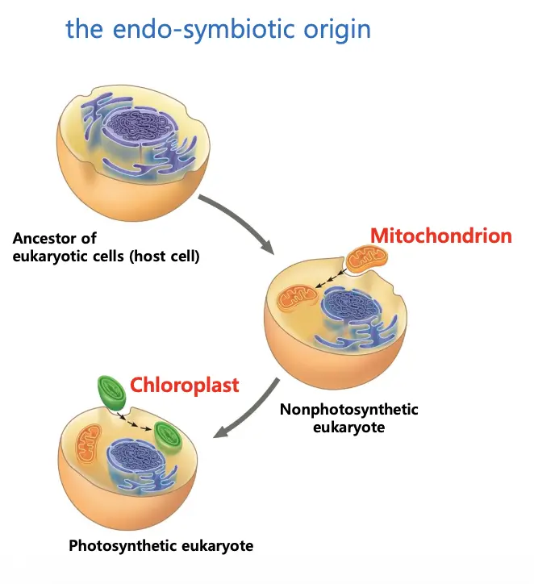
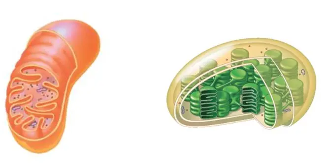

Concept 1. Biologists use microscopes and biochemistry to study cells.
microscopes, tools of cytology
- 1. type
- (1) LM (light microscope) - live
- bright-field 염색 한 거 필터로 대조를 높인 거 필터로 볼륨이 보임
- fluorescent(형광), confocal(공초점)
- 해상도가 좀 떨어짐
- (2) EM (electron microscope)
- 눈의 빛 수용체의 표면
- (b) TEM (투과현미경)
- 살아있는 세포를 관찰하는 데에 적합 X, 샘플 처리에 화학물질을 쓰는데 그게 독해서 세포가 죽음
- *super-resolution microscopy : 광학현미경임
- *cryo-EM : 액체 상태 샘플 관찰 ⇒ 샘플 손상 정도 낮음 (그냥 EM은 고체)
- 1. parameters
- magnification : 이미지의 사이즈
- resolution (해상도)
- contrast (대조) : 시그널이 노이즈에 대비하여 선명하게 보임
The size range of cells
Concept 2. Eukaryotic cells have internal membranes that compartmentalize their functions.
Eukaryotic cells, internal membranes
- 1. 세포의 최소 조건
- cell membrane (plasma membrane) : 세포막
DNA (핵산)
ribosome (리보솜)
cytosol (cytoplasm) : 세포질 (핵빼고 나머지)
- 2. 세포막
- 세포 막에는 여러 단백질이 있음,
- e.g.) 이름표 역할, 수송단백질 등등
- 1. 세포 종류
- (1) prokaryotic cells, prokaryotes
- 단세포임
- (a) domain bacteria (세균역)
- (b) domain archaea (고세균역)
- (2) eukaryotic cells, eukaryotes
- membrane-bound organelles
- ⇒ 세포막 외의 막으로 둘러쌓여있는 구조체들이 있음 : 세포 소기관(organelles)
- e.g.) 미토콘드리아, 염록체, 소포체, 핵 등등
- 여러 소포체 ⇒ endomembrane system (내막계)
- (a) domain eukarya (진핵생물역)
- 1. kingdom animalia : 동물계
- 2. kingdom plantae : 식물계
- 3. kingdom fungi : 균게
- 4. protists : 원생생물계
Concept 3. The eukaryotic cell’s genetic instructions are housed in the nucleus and carried out by ribosomes.
Nucleus and ribosome
- ER (endoplasmic reticulum) : 소포체
- 1. RER – rough 거친면 소포체 : 리보솜이 붙어있어 표면이 거침
- → 단백질 합성
- → polypeptide folding, multimerization, glycosylation, QC
- 2. SER – smooth 매끈면 소포체
- → 지질(lipids) 합성 (e.g. sex hormones)
- → drugs and poisons 분해 (detoxification)
- → 칼슘 이온 저장
- *리소좀 : 분해를 담당하는 세포 소기관.
- 액틴, 리오신, 헤모글로빈 등 - 세포 안에서 있어야 함. ⇒ 자유 리보솜(free ribosome)에서 합성됨.
- 항체, 호르몬, 인슐린 단백질 - 세포 밖을 돌아다녀야 함 ⇒ 거친면 소포체(RER)의 리보솜에서 합성됨.
- 리보솜은 세포 소기관(organelles)이 아니다!
Concept 4. The endomembrane system regulates protein traffic and performs metabolic functions.
endomembrane system (내막계), protein processing
- the nuclear envelope (핵막) : DNA → mRNA 이후 소포체 근처 리보솜으로 이동
- the endoplasmic reticulum(ER) (소포체) : 폴리 펩타이드 합성되는 중 소포체 안으로 이동
- RER의 내부 구조에서
- → polypeptide folding(접힘) (3단계 구조)
- → multimerization(다중화) (4단계 구조)
- → QC(Quality Control): 잘못 만들어진 단백질 없앰.
- → glycosylation(당화 작용): 글리코스 몇 조각 붙여줌. 표면 구조가 다듬어짐.
- (e.g. 세포막 단백질, cell identity) : glycoproteins(글라이코 프로틴) 생성
- 소포체 → 골지체 : 소포 or 소낭 (vesicles)가 이동시킴.
- the golgi apparatus (골지체)
- 세포막, 리소좀, 세포 밖으로 향하는 단백질 분류
- → 단백질에 당사슬을 붙여 최종 목적지 표시
- *lysosomes (리소좀)
- *vacuoles (액포)
- 골지체 → plasma membrane : 소포(vesicles)가 이동시킴.
- The plasma membrane (세포막)
Lysosome (리소좀)
- 1. hydrolytic enzymes (가수분해 효소)
- 1. 단백질, 지질, 탄수화물, 핵산 같은 고분자를 분해 할 수 있음.
- 2. phagocytosis (식세포작용)
- 3. recycle damaged organelles (손상된 세포 소기관 재활용)
- 1. 미토콘드리아 등 오래되거나 고장난 소기관을 분해함.
Concept 5. Mitochondria and chloroplasts change energy from one form to another.
Mitochondria and chloroplasts

- 미토콘드리아, 염록체

- 1. 막이 여러개임.
- 2. 원래 원핵세포였음. → 오래 살다보니 의존적(공생관계)가 됨.
막으로 둘러쌓임, DNA, 리보솜, 세포질이 있음. → 세포 기본 조건 만족함.
- 3. 메이트릭스(matrix), 스트로마(stroma) : 6단원에서 더 설명.
Concept 6. The cytoskeleton is a network of fibers that organizes structures and activities in the cell.
cytoskeleton 세포 골격 구조
- 미세소관 (microtubules)
- 관 모양 구조라 섬유가 아닌 소관이라 불림.
- 튜블린(알파, 베타) 단백질이 원통형으로 배열되어 만들어 지기 때문에 tubules이 들어감.
- 미세섬유 (microfilaments = actin filaments)
- 액틴 기반으로 만들어짐. 액틴 2가닥을 꼬아놓은 구조
- 중간섬유 (intermediate filaments)
- 2.동적 성질 (dynamicity)
- 중합과 탈중합 (Polymerization & Depolymerization)
- 단백질 단위(monomer)가 서로 합성되며 필라멘트(섬유를 형성함) = polymerization
- Depolymerizaion은 반대 과정으로, 섬유가 파괴됨.
- → 필요에 따라 길이가 변함 == growth & collapse라고 하기도 함.
cell motility (세포 운동)
- cilia(섬모) : 털 같은 구조(짧고 많음), 나쁜 물질을 걸러내는 역할도 함.
- flagella(편모) : 털 같은 구조(길고 적음), 정자 꼬리처럼 채찍질하며 세포를 추진
cell division (세포 분열)
- 분열 시 spindle fibers(방추사) 형성 + 염색체 이동을 가능하게 함.
Organelle transport (소기관 운반)
- 미세 소관 → 세포 안에서 철도 레일 역할을 함.
- 미토콘드리아, 소낭 등 운동 단백질에 의해 미세소관을 따라 이동
Concept 7. Extracellular components and connections between cells help coordinate cellular activities.
- Extracellular components 세포 외부 구조
- Cell walls → plants
- ECM(extracellular matrix) - 세포 밖 물질들(콜라겐 같은 거) → animals
- connections between cells
- plants: plasmodesmata(원형질연락사)
animals: tight junctions(밀착연접), desmosomes(데스모즘, 부착반점), gap junctions(간극연접)
Concept 8. A cell is greater than the sum of its parts.
(내용 없음)